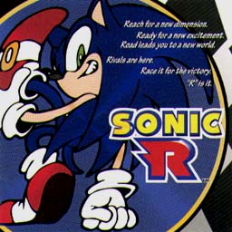
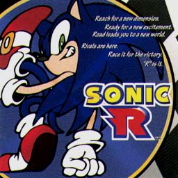

SONIC R


SONIC R

|
発売元：株式会社マーベラスエンターテイメント |
|
プロジェクトソニック第2弾だったソニックRのサントラ盤。 |
|
01. Can You Feel The Sunshine? 02. Living In The City 03. Back In Time 04. Work It Out 05. Diamond In The Sky 06. Super Sonic Racing 07. Number One 08. Start Fanfare 09. End Fanfare 10. Options Screen 11. Work It Out [Red Raw Mix] ...Red Raw 12. Super Sonic Racing [X-TRA Club Mix] ...XTRA MUSIC Productions |
|
・次の作品を見てみたいっす!! ・関連CD＜国内編＞のページへ ・Music CDのページへ ・Sound Web Siteのトップページへ |